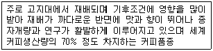
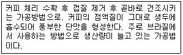
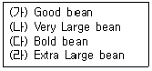
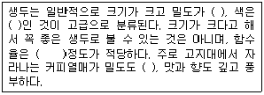
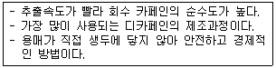
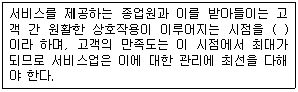
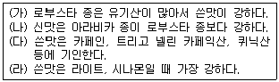
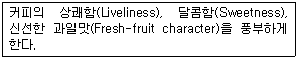

바리스타-2급 (2010-05-08 기출문제)
1과목: 커피학 개론
1. 커피에 관한 식물학적 내용 중 바르게 설명된 것은?
- 아라비카 종의 경우 연평균 강우량 1,500~2,000mm의 규칙적인 비와 충분한 햇볕을 받아야 한다.
- 커피의 열매는 길이가 약 15~18mm의 타원형으로 파치먼트라고 불린다.
- 아라비카 종은 평균 3%, 로부스타 종은 약 1%의 카페인을 함유하고 있다.
- 커피나무는 꼭두서니과(Rubiaceae)에 속하는 상록수로 브라질이 원산지이다.
(정답률: 86%)

2. 커피의 단계별 명칭으로 옳지 않은 것은?
- 커피 열매-Cherry
- 커피의 씨앗을 건조시킨 것-Whole Bean
- 커피 열매의 정제된 씨앗-Green Bean
- 원두를 분쇄한 것-Ground Coffee
(정답률: 73%)
3. 식물학적으로 본 커피 품종에 대한 내용이다. 설명 중 틀린 것은?
- 커피나무는 꼭두서니(Rubiaceae) 과(科) 코페아(Coffea) 속(屬)에 속하는 다년생 상록 쌍떡잎식물이다.
- 코페아 아라비카(Coffea Arabica)는 자가 수분(Self-Pollination)을 하며, 대표적인 품종에는 티피카(Typica), 버번(Bourbon)등이 있다.
- Hdt(Hibrido de Timor)는 아라비카와 로부스타의 교배종이다.
- 코페아 카네포라(Coffea Canephora)는 흔히 리베리카라고 한다.
(정답률: 68%)
4. 다음 설명하는 커피의 품종은 무엇인가?

- 아라비카 종
- 로부스타 종
- 리베리카 종
- 카네포라 종
(정답률: 90%)
5. 다음의 커피 품종 중 종류가 다른 하나는?
- 티피카(Typica)
- 버번(Bourbon)
- 코닐론(Conillon)
- 카투라(Caturra)
(정답률: 82%)
6. 다음 중 커피 품종이 서로 잘못 연결된 것은?
- 티피카(Typica)-아라비카 원종에 가장 가까운 품종
- 카투라(Caturra)-인도의 고유품종
- 버번(Bourbon)-Bourbon섬(현Reunion섬)에서 발견된 품종
- 카티모르(Catimor)-카투라(Caturra)와 HdT(Hibrido de Timor)의 교배종
(정답률: 71%)
7. 피베리(Peaberry)의 설명으로 바르지 못한 것은?
- 스페인어로 카라콜(Caracol, Caracoli)이라고 하며 달팽이 모양의 콩이라는 뜻이다.
- 체리 안에 대부분 두 개의 콩이 자리 잡고 있으나, 간혹 한 개의 콩만 들어 있는 경우가 있는데 이러한 생두를 지칭한다.
- 주로 가지 끝에 열린 체리에서 쉽게 발견할 수 있는데 모양이 아주 둥글어 육안으로 식별이 가능하다.
- 커피 체리에 콩이 하나만 들어있어 저급 커피로 인식되고 있다.
(정답률: 81%)
8. 커피 재배에 관한 설명으로 바르지 못한 것은?
- 커피나무를 키우는 경작지는 배수가 잘되고 미네랄이 적당히 함유된 토양이 좋다.
- 바나나등 다른 농작물과 함께 심거나 다른 농작물과 번갈아가며 커피농사를 짓기도 한다.
- 아라비카 종은 열대, 아열대 지역의 고도 약 800~2000m, 연평균 기온 약 15-24℃인 지역에서 재배된다.
- 아라비카 종은 로부스타 종 보다 나쁜 환경에 더 잘 견디고 질병에도 강하여 재배를 위한 유지비용이 많이 든다.
(정답률: 76%)
9. 다음 중 아라비카 커피 재배지역에 대한 설명으로 가장 부적합한 지역은?
- 적도를 기준으로 남, 북위 25° 사이의 고산지대로 열대 또는 아열대지역
- 브라질이나 인도의 몬순지역처럼 건기와 우기가 명확하며 알칼리성 토양 지역
- 연평균 기온이 약 15~24℃ 정도이고, 연평균 강우량은 1,500m-2,000mm 수준인 지역
- 화성암 풍화지대로 토양이 비옥하고 배수가 잘 되는 지역
(정답률: 78%)
10. 그늘 경작법(Shading)에 대한 설명 중 틀린 것은?
- 잎이 넓은 나무를 심어 햇빛을 완전히 차단하는 방법이다.
- 키 큰 나무의 그늘을 이용하여 커피나무의 일조시간을 줄여줌으로써 생두의 밀도를 높여준다.
- 커피나무에 그늘을 만들어 주기 위해 심는 나무를 Shade tree(섀이드 트리) 라고 한다.
- 이 경작방법으로 생산된 원두를 ‘Shade-grown coffee(섀이드 그로운 커피)' 라고 한다.
(정답률: 79%)
11. 커피나무가 이 병에 걸리면 수확량이 감소하고 성장이 방해되어 나무가 죽을 수 있으며, 현재까지 알려진 커피 질병 중 가장 피해가 큰 것으로 보고 되고 있다. 이에 관련되는 질병은 아래의 어느 것인가?
- Coffee Berry Disease
- Coffee Ringspot Virus
- Coffee Leaf Rust
- Coffee Wilt Disease
(정답률: 81%)
12. 커피 체리를 가공하는 방법 중 틀린 설명은?
- 커피 체리를 수확한 후 그 상태로 말리는 방법을 건식법(Dry processing)이라 부른다
- 건조방식은 햇볕에 직접 말리는 방법과 기계를 이용하는 방식으로 크게 나뉜다.
- 펄프 제거 후 파치먼트 상태로 말리는 커피 수확 방법을 습식가공법(Wet processing)이라 부른다.
- 현재 가장 많이 사용하는 방식은 세미 워시드(Semi washed)방식이다.
(정답률: 60%)
13. 생두 가공법 중에 건식법(Dry processing)에 대한 설명으로 옳은 것은?
- 수확한 체리를 그대로 건조시킨 후, 건조된 체리로부터 생두를 분리한다.
- 수확한 커피 체리에서 과육을 제거한 후 건조시킨다.
- 수확한 커피 체리에서 생두를 분리하여 수분 함량 17-18% 정도로 만든다.
- 덜 익은 커피 체리를 수확하여 저온에서 숙성한 후, 생두를 분리하여 건조 시킨다.
(정답률: 67%)
14. 향미가 풍부한 품질 좋은 커피를 생산하기 위한 방법으로 올바른 것은?
- 생두의 수분을 완전히 건조하기 위해 장기간 햇볕에 건조시킨다.
- 완전히 익은 붉은 색의 체리를 선별 수확한다.
- 유기농법으로 가공한다.
- 수확 후 커피 체리 껍질은 제거한 다음 건조시켜야 한다.
(정답률: 81%)
15. 다음은 생두의 어떤 가공 과정에 대한 설명인가?

- 세미 워시드(Semi-washed coffee)
- 내추럴 커피(Natural Coffee)
- 워시드 커피(Washed Coffee)
- 펄프드 내추럴 커피(Pulped Natural Coffee)
(정답률: 73%)
16. 스크리닝(Screening) 작업을 통하여 생두를 분리하는데, 스크린 사이즈(Screen size)가 큰 것부터 작은 순으로 정확하게 나열한 것은?

- (가)-(나)-(다)-(라)
- (나)-(라)-(가)-(다)
- (나)-(라)-(다)-(가)
- (라)-(나)-(다)-(가)
(정답률: 54%)
17. 커피를 분류하는 기준이 다른 세나라와 다른 국가는?
- 콜롬비아
- 과테말라
- 온두라스
- 엘살바도르
(정답률: 60%)
18. 다음 중 지역과 커피 생산국이 바르게 연결된 것은?
- 남미 커피 생산국: 브라질, 과테말라, 베네수엘라, 페루
- 중미 커피 생산국: 과테말라, 콜롬비아, 코스타리카, 도미니카
- 서인도 제도 커피: 자메이카, 쿠바, 아이티, 엘살바도르
- 아프리카 커피 생산국: 에티오피아, 케냐, 탄자니아, 짐바브웨
(정답률: 66%)
19. 나라에 따라 생두 등급을 책정하는 기준이 다르다. 다음 중 그 기준에 해당 되지 않는 것을 고르시오
- 재배고도
- 생두 수분함량
- 결점두 수
- 생두크기
(정답률: 65%)
20. 커피콩의 크기에 대한 품질 평가 기준을 잘못 설명한 것은?
- 일반적으로 생두가 클수록 고급으로 여기며, 가격도 비싸다.
- 브라질에서는 1/64 inch 단위로 구멍 크기가 분류된 체(Screener)를 이용하여 생두의 크기 등급을 측정한다.
- 케냐는 AA, A 등급으로, 코트디부아르는 A, B, C, PB 등급으로 표기한다.
- 브라질의 Screen #18은 미국의 7.14mm, 영국의 Large bean에 해당하는 크기다.
(정답률: 47%)
21. 정상 생두에 포함된 결점에 대한 다음 정보 중 옳지 않은 것은?
- 외부물질인 돌, 나뭇가지 등은 결점에 속하지 않는다.
- 벌레가 먹거나, 부서져 모양이 불규칙한 생두이다.
- 검은색, 갈색, 덜 성숙한 듯한 녹색 등으로 색깔이 불규칙한 생두이다.
- 향미에 가장 큰 영향을 미치고, 뉴욕거래소의 NY 등급 기준으로 가장 점수가 높은 결점에는 Black bean 및 Sour bean 등이 있다.
(정답률: 68%)
22. 커피의 카페인을 제거하기 위해 사용되는 유기용매가 아닌 것은?
- Benzene(벤젠)
- Chloroform(클로로포름)
- Dichloromethane(디클로로메탄)
- Hexane(헥산)
(정답률: 65%)
23. 좋은 생두의 조건을 나열하면 다음과 같다. 괄호 안에 들어갈 옳은 내용은 어느것 인가?

- 낮으며, 어두운 갈색, 12%, 낮으며
- 높으며, 밝은 청록색, 12% , 높으며
- 높으며, 어두운 갈색, 30%, 낮으며
- 낮으며, 밝은 청록색, 12%, 낮으며
(정답률: 84%)
24. 다음은 디카페인 커피의 제조과정을 설명한 내용인데, 어떤 종류의 추출법을 설명한 것 인가?

- 초임계 추출법
- 물 추출법
- 증류 추출법
- 용매 추출법
(정답률: 68%)
25. 영업장에서 유리잔을 포함한 식기 세척 시, 가장 위생적인 세척순서는?
- 비눗물 → 더운물 → 찬물
- 더운물 → 비눗물 → 찬물
- 비눗물 → 찬물 → 더운물
- 찬물 → 비눗물 → 더운물
(정답률: 75%)
26. 우유 단백질에 속하는 성분이 아닌 것은?
- 카제인
- 베타-락토글로불린
- 오브알부민
- 락토페린
(정답률: 59%)
27. 우유를 마시면 소화가 잘 되지 않아서 속이 거북해지는 현상을 유당불내증이라고 한다. 유당불내증에 대한 설명 중 틀린 것은?
- 유당불내증은 대개 유전적 현상이다.
- 한국인의 대부분은 중학교 고학년이 되면 유당불내증이 나타나는 후천성 유당불내증 현상을 보인다.
- 한국인은 우유를 잘 소화시키지 못하는 경향이 많다.
- 백인이나 동양인보다 아프리카인이 우유를 더 잘 소화한다
(정답률: 70%)
28. 커피와 같은 식음료 제공 시, 고객 접대 방식이 옳은 것은 어느 것인가?
- 커피 잔 손잡이는 고객의 앞쪽을 향하게 제공한다.
- 커피스푼은 고객의 오른쪽에 수프 스푼과 함께 세팅한다.
- 레스토랑에서 커피는 고객의 앞쪽에서 제공한다.
- 레스토랑에서 커피주문은 고객의 왼쪽에 서서 받는다,
(정답률: 56%)
29. 아래의 내용 공란에 적합한 용어는 무엇인가?

- 서비스 기대점
- 서비스 접점
- 서비스 순환점
- 서비스 시발점
(정답률: 77%)
30. 커피성분 중 지방의 산패에 영향을 미치는 인자에 대한 설명으로 맞는 것은?
- 저장온도가 0℃ 이하가 되면 산패가 방지된다.
- 광선은 산패를 촉진하나, 그 중 자외선은 산패에 영향을 미치지 않는다.
- 구리, 철은 산패를 촉진하나 납, 알루미늄은 산패에 영향을 미치지 않는다.
- 커피 지방의 불포화도가 높을수록 산패가 활발하게 일어난다.
(정답률: 66%)
2과목: 로스팅과 향미 평가(커피 배전)
31. 커피 로스팅 시 일어나는 물리적 현상으로 옳지 않은 것은?
- 온도의 상승으로 원두와 실버스킨의 분리
- 수분이 증발하고 내부 조직이 팽창되면서 1차 크랙의 발생
- 원두 부피의 지속적 감소
- 1차 크랙의 발생 후 2차 크랙의 발생
(정답률: 78%)
32. 생두를 로스팅 함으로써 가장 현저하게 감소되는 물질은?
- 지질
- 카페인
- 섬유소
- 설탕(자당)
(정답률: 58%)
33. 다음 중 카페인에 대한 설명으로 맞는 것은?
- 카페인에 의한 쓴맛은 전체의 10% 정도이다.
- 로스팅에 의해 대부분 사라지게 만들 수 있다.
- 로스팅 후 30일 이상 지나면 점차 사라진다.
- 당과 반응해서 멜라노이딘 및 향기 성분으로 변화한다.’
(정답률: 68%)
34. 로스팅(Roasting)에 대한 설명 중 틀린 것은?
- 로스팅을 하기 전, 생두의 수분함량, 밀도, 수확연도, 가공방법 등을 점검한다.
- 로스팅 전, 반드시 로스팅 머신은 강한 화력으로 빨리 예열시켜야 한다.
- 로스팅 머신의 특징에 맞게 투입하는 생두의 양을 조절한다.
- 로스팅을 하기 전, 로스팅 포인트를 미리 결정한다.
(정답률: 78%)
35. 커피생두를 오랜 기간 저장하였을 경우, 생두의 색, 향미 및 지질의 산가가 변화된다. 이들 현상에 대한 설명 중 틀린 것은?
- 커피생두에 함유된 지질에 산가는 증가 된다.
- 커피생두의 색은 황색내지 갈색에서 청녹색으로 변화한다.
- 커피생두의 산가의 변화는 리파아제(Lipase)에 의한 지질의 가수분해 때문이다.
- 커피생두의 색, 향미 및 산가의 변화는 저장조건과 밀접한 관련이 있다.
(정답률: 66%)
36. 다음 로스팅 중 맛 성분의 변화에 대한 설명 중 옳은 것은?

- (가), (나)
- (가), (라)
- (나), (다)
- (다), (라)
(정답률: 64%)
37. 커피 신맛의 주성분은?
- 타닌
- 유기산
- 배당체
- 알칼로이드
(정답률: 71%)
38. 커피를 약학 화력에 너무 오래 로스팅해서 캐러멜화가 충분히 진행되지 않아 나타나는 향미의 결함은?
- Baked
- Green
- Tipped
- Woody
(정답률: 58%)
39. 다음 향기의 강도를 표현하는 용어 중 향기가 강한 순서로 나열된 것은?
- Flat > Rounded > Full > Rich
- Full > Rich > Rounded > Flat
- Rich > Full > Rounded > Flat
- Rounded > Full > Flat > Rich
(정답률: 55%)
40. 커피 맛을 표현하는 용어 중 향기로 지각할 수 있는 용어의 총칭으로 사용되는 것은?
- Aroma
- Bouquet
- Flavor
- Fragrance
(정답률: 54%)
41. 다음은 SCAE 의 Cup Tasters Championship의 경기 규칙을 설명한 내용이다. 가장 적절히 설명한 것은?
- 경기에 사용되어지는 8개 그룹의 커피 종류는 전세계 프리미엄급 정도의 커피 중 가장 일반적으로 알려진 커피를 사용한다.
- 모든 커피들은 동일한 로스팅-Full City로 볶아진 것을 사용하며 똑같은 크기로 분쇄 되어져야 한다.
- 모든 경기는 4분 이내에 끝내야 하며 심사워원장은 매 1분마다 신호를 보낸다.
- 이 경기에 사용되는 컵의 용량은 240ml내외 이며 참가자들에게 제공되는 커피 양은 150~180ml이다.
(정답률: 46%)
42. 생두를 샘플 로스팅 할 때 생두의 평가항목이 아닌 것은?
- 생두의 품종과 형태
- 생두의 색상과 크기
- 생두의 냄새와 비중
- 생두의 분쇄정도
(정답률: 54%)
43. 다음 향미 특성을 나타내는 용어에 해당하는 것을 고르시오.

- Fragrance
- Acidity
- Body
- Flavor
(정답률: 31%)
44. 로스팅 방법 중 고온-단시간 로스팅의 특징이 아닌 것은?
- 신맛이 약하고 뒷맛이 텁텁하나 중후함이 강하고 향기가 풍부하다.
- 상대적으로 커피콩의 팽창이 커 밀도가 낮다.
- 가용성 성분은 저온 장시간 로스팅에 비해 10~20% 더 추출 된다.
- 한 잔당 커피사용량을 10~20% 덜 쓰게 되어 경제적이다.
(정답률: 43%)
45. 로스팅 머신의 설명 중 틀린 것은?
- 로스팅 머신의 열원은 가스, 전기, 오일, 숯 등으로 다양하다.
- 직화식, 반열풍식, 열풍식으로 로스팅 방식이 나뉘어 진다.
- 로스팅 도중 로스팅 진행 상황을 확인할 수 있는 장치는 샘플러이다.
- 드럼 외부의 공기 흐름과 열량을 조절하는 장치는 댐퍼이다.
(정답률: 43%)
3과목: 커피 추출
46. 다음은 커피 추출시 사용하는 물에 관한 내용이다. 올바르게 설명 된 것은?
- 신선하고 좋은 맛이어야 하며 냄새와 불순물이 없어야 한다.
- 정수된 물보다 수돗물을 사용하는 것이 바람직하다.
- 이산화탄소가 전혀 남아 있지 않은 깨끗한 물이 좋다.
- 150ppm이상의 미네랄이 함유되어 있는 물이 좋다.
(정답률: 83%)
47. 커피를 추출하기 위해 분쇄를 하는 이유로 타당한 것은?
- 원가의 절감
- 물과 접촉되는 표면적의 증가
- 커피성분의 최대한 추출
- 짧은 시간에 효율적인 서비스를 위해
(정답률: 69%)
48. 드립여과 방식(Drip Filtration)의 커피 추출에서 수분과 열을 주어 분쇄입자를 팽창시켜 커피성분이 추출되기 쉬운 상태로 만들기 위한 작업은?
- 진액 추출
- 스프링 주입
- 뜸들이기
- 추출
(정답률: 73%)
49. 핸드드립으로 커피를 추출할 경우 분쇄 커피가루 표면에 발생하는 거품에 대한 설명으로 옳지 않은 것은?
- 표면에 떠오르는 거품은 잡미를 포함하고 있다.
- 신선하지 않은 커피가루는 거품이 표면에 나오지 않는다.
- 추출 시에 커피가루 표면에 발생하는 거품은 작고 고울수록 좋다.
- 드립 추출 시 가루표면에 발생한 거품은 향기 성분을 많이 포함하고 있기때문에, 드리퍼의 물이 완전히 빠질 때까지 서버에 올려놓는다.
(정답률: 56%)
50. 그룹헤드의 디스퍼젼 스크린(Dispersion Screen)에 대한 설명 중 옳은 것은?
- 동(구리)으로 된 재질이다.
- 청소를 매일 해주어야 한다.
- 물을 한 줄기로 모아주는 역할을 한다.
- 영구사용이 가능하다.
(정답률: 50%)
51. 물과 비교한 에스프레소의 물리화학적 변화를 올바르게 설명한 것은?
- 표면장력이 증가한다.
- 밀도가 낮아진다.
- 전기 전도도가 낮아진다.
- pH가 낮아진다.
(정답률: 47%)
52. 에스프레소 추출작업이나 사용되는 도구에 대한 설명이다. 옳은 것은?
- 블라인드 필터(Blind Filter)-구멍이 막힌 필터로 그룹헤드 청소 시 사용된다.
- 탬핑(Tamping)-포타필터의 바깥쪽을 툭툭 두드리는 작업이다.
- 넉 박스(Knock Box)-커피를 보관하는 도구이다.
- 탬퍼(Tamper)-필터 바스켓에 분쇄된 커피를 담는 도구이다.
(정답률: 60%)
53. 에스프레소 머신의 점검과 관리에 대한 내용 중 틀린 것은?
- 펌프압력과 보일러온도는 게이지(Gauge)를 통해 상시 확인해야 한다.
- 배수구는 마감작업을 할 때 뜨거운 물을 충분히 흘려보내서 청소한다.
- 개스킷(Gasket)의 교체는 커피가 잘 나오지 않을 때 한다.
- 스팀노즐은 항상 청결한 상태를 유지하기 위해 사용할 때마다 청소를 해두어야 한다.
(정답률: 74%)
54. 에스프레소 추출 시 첫 단계로서 팩킹(Packing) 작업을 하게 되는데, 이 때 태핑(Tapping) 을 하는 이유는?
- 분쇄한 원두를 필터 홀더(Filter Holder)에 담아 눌러 다지기 위해
- 필터 홀더 가장자리의 커피가루를 떨어내기 위해
- 필터 홀더에 분쇄한 커피를 담기 전에 남아있는 커피가루를 제거하기 위해
- 필터홀더를 뒤집어 봄으로서 팩킹(Packing)의 완성도를 확인하기 위해
(정답률: 42%)
55. 에스프레소 추출 시 커피케이크의 고른 밀도 유지와 물의 균일한 통과를 위해 하는 작업은?
- 그라인딩(Grinding)
- 태핑(Tapping)
- 탬핑(Tamping)
- 도징(Dosing)
(정답률: 74%)
56. 다음 설명 중 옳은 것은?
- 에스프레소는 크레마의 지속성과 관계가 있다.
- 에스프레소는 온도와는 별로 관계가 없다.
- 에스프레소는 분쇄 커피와 공기의 접촉시간을 최대화해야 한다.
- 에스프레소는 추출압력이 낮을수록 좋다.
(정답률: 70%)
57. 에스프레소 추출 시 머신에서 추출 전 물 흘리기를 하는 이유가 아닌 것은?
- 과열된 물을 흘려 온도를 조절한다.
- 그룹헤드의 이물질을 제거한다.
- 추출온도를 점검한다.
- Infusion(뜸들이기)을 하기 위함이다.
(정답률: 67%)
58. 다음은 에스프레소 메뉴에 관련된 용어들이다. 바르게 설명된 것은?
- 리스트레또(Ristretto)-추출시간을 짧게 하여 보다 농축된 에스프레소를 지칭한다.
- 도피오(Doppio)-추출시간을 길게 하여 쓴맛이 더 강조된 에스프레소이다.
- 룽고(Lungo)-에스프레소에 데운 우유와 휘핑크림을 올린 것으로 비엔나커피라고도 한다.
- 데미타세(Demitasse)-카푸치노를 마시는데 사용되는 잔이다.
(정답률: 64%)
59. 추출기구에 대한 설명이다. 잘못 연결한 것은?
- 이브릭-카다몸(Cardamom)이라는 향신료를 넣어 즐기기도 하는 터키식 커피 추출기구
- 프렌치프레스-1933년 이태리에서 만들어진 수동식 에스프레소 추출기구
- 워터 드립-더치커피라고도 부르며 찬물로 장시간 추출하는 방식
- 사이폰-시각적인 연출효과가 뛰어난 진공여과방식의 추출기구
(정답률: 55%)
60. 에스프레소 머신의 관리에 대한 다음 설명 중 틀린 것은?(문제오류 : 실제시험장에서는 오타로 인하여 1, 3번을 정답으로 처리하였습니다. 여기서는 3번을 정답 처리 합니다.)
- 포타필터는 커피와 직접 접촉하는 부분이므로 매일 청소해야 한다.
- 기계의 주요 부위는 찌꺼기가 침착되지 않도록 정기적으로 접촉하는 부분이므로 매일 청소해야 세척한다.
- 커피 기계를 세척할 때는 향기가 있는 세제를 사용하는 것이 좋다.
- 스케일을 방지하기 위해 칼슘제거용 용액을 통과시킨 후 물로 충분히 헹군다.
(정답률: 75%)